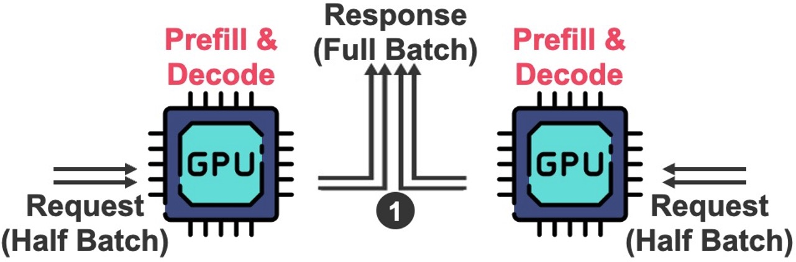
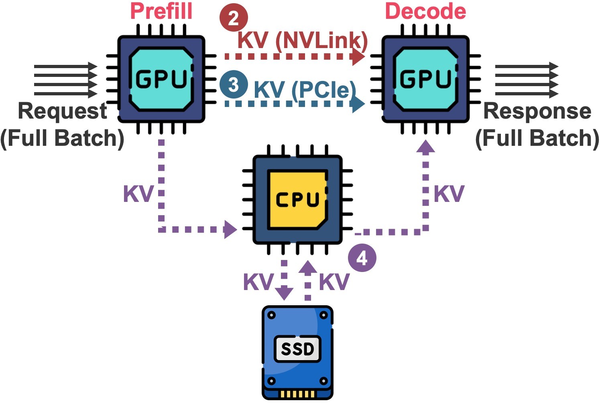
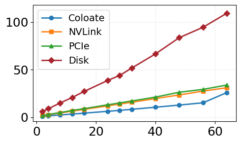
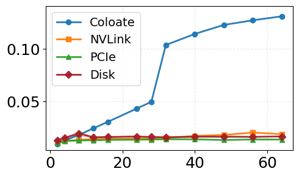

Energy-Efficient LLM Inference Clusters via Prefill-Decode Disaggregation
Disaggregated Large Language Model (LLM) serving dedicates distinct GPUs to prefill and decode workload, but this separation introduces a KV cache transfer from the prefill GPU to the decode GPU after prefill completion. While existing works have explored KV cache transfer across memory and storage tiers, their performance and energy trade-offs remain insufficiently benchmarked. Similarly, the performance and energy implications of optimization techniques such as frequency scaling in disaggregated serving remain under-characterized.
To address this gap, we benchmark multiple KV cache transfer paths against a colocated serving baseline, measuring latency, throughput, and energy consumption under synthetic inference workloads. We further use dynamic voltage and frequency scaling (DVFS) to characterize the trade-off between serving efficiency and GPU frequency, and to evaluate the benefits of independently scaling the prefill and decode GPUs.
Our results show that prefill–decode disaggregation is not always beneficial. Its gains depend on workload characteristic, KV transfer medium, and LLM model size. We also observe diminishing returns from higher KV transfer bandwidth and show that stage-wise independent frequency scaling can improve energy efficiency under latency constraints. Based on these insights, we propose a prototype framework for SLO-aware energy-efficient LLM serving and discuss its design challenges and evaluation methodology.

Colocated Configuration

Disaggregated Configurations

Time to First Token (Llama-3B)

Time per Output Token (Llama-3B)